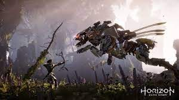
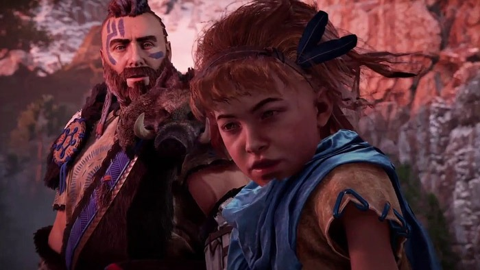
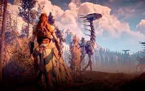
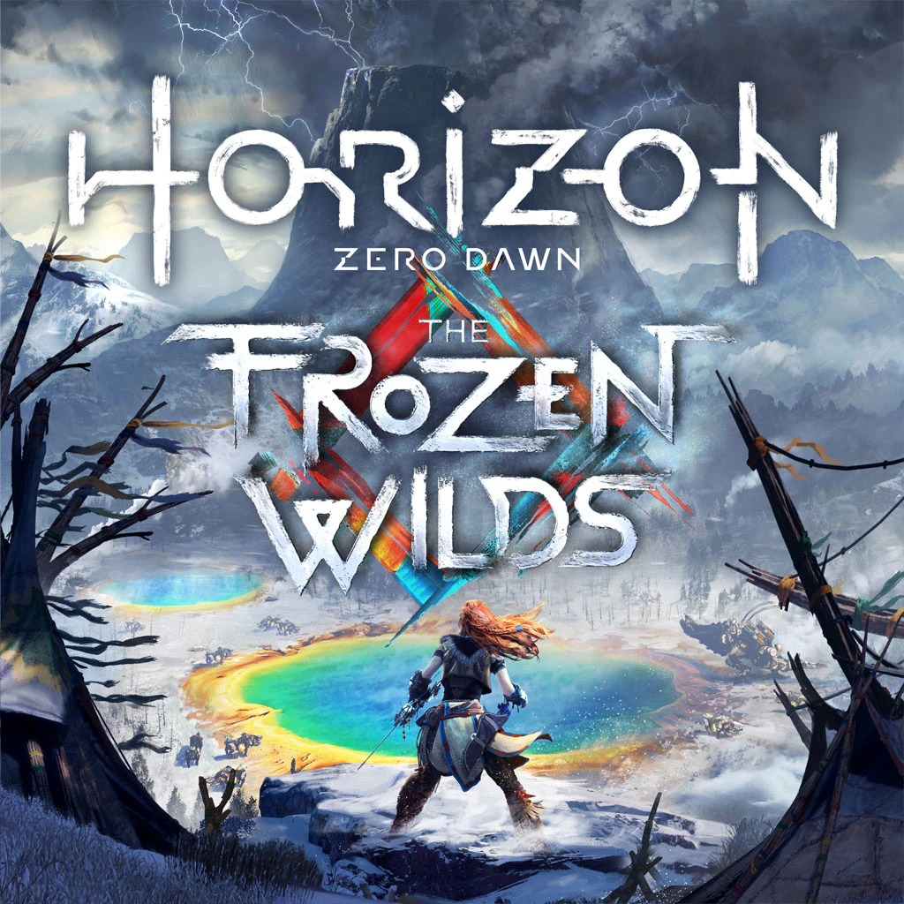

Horizon Zero Dawn é um jogo eletrônico de RPG de ação, que combina conceitos de civilizações tribais com máquinas que são como animais selvagens. Os humanos caçam estas máquinas para obter seus recursos.
A aventura se passa no planeta Terra, que, por motivos desconhecidos, “regrediu” das enormes cidades para povoados e pequenas cidades. Neste contexto, surge uma menina chamada Aloy, que é uma exilada, ou seja, uma pessoa privada de todo e qualquer contato social com a sua tribo de origem, no caso a tribo Nora. Ela foi criada por outro exilado chamado Host. A garota sempre quis entender o porquê de ter nascido isolada, até que, acidentalmente, entra em uma ruína que, para os membros da tribo, é uma "ruína do mundo metálico". Então, encontra e se apropria de um dispositivo denominado "Foco", uma máquina que lhe concede informações sobre basicamente qualquer coisa.
A personagem, a fim de entender o motivo de seu exílio, decide enfrentar um ritual de passagem, chamado "A provação", no qual os jovens se tornavam “Valentes”, isto é, membros dos Nora. Os exilados, através deste ritual, têm a oportunidade de se tornarem membros da sociedade. Aquele que vencer terá direito a um desejo atendido pelas líderes da tribo. Aloy passou toda a sua infância treinando com Host para este ritual. Muitos anos depois, ela realiza e conclui a prova, mas algo completamente inesperado acontece.
Além da história principal, o jogo também conta com uma DLC, ou seja, um pacote de expansão, denominada "Frozen Wilds", que acrescenta uma nova aventura, novas máquinas, equipamentos e mais 8 horas, em média, de tempo de jogo.
O jogo foi desenvolvido pela Guerrilla Games, o mesmo estúdio de Killzone, dirigido por Mathijs de Jonge e publicado pela Sony Interactive Entertainment. Foi lançado originalmente em 28 de fevereiro de 2017, exclusivamente para PlayStation 4, mas, em 7 de agosto de 2020, foi lançado para Microsoft Windows.
Este site foi desenvolvido por: